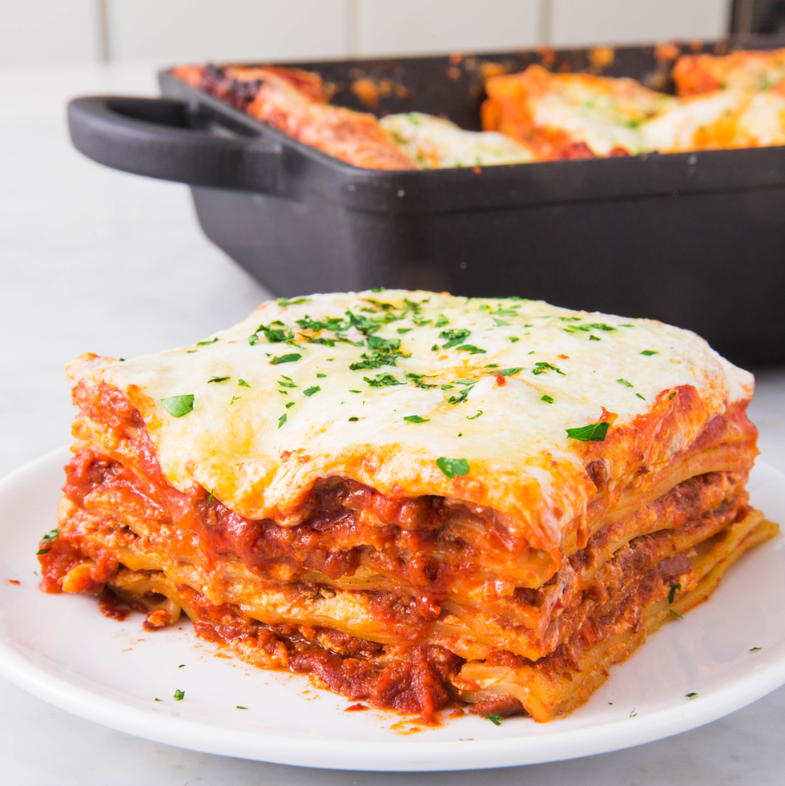

Lasagna Bolognese

Description
Authentic Bolognese sauce is slow-cooked to perfection, and then spread over fresh lasagna noodles covered with béchamel sauce.
This is the best and only lasagna recipe you will ever want.
For better results, always use the highest quality ingredients available, from the salt to the meat and wine.
Ingredients
- Bolognese sauce
- Bechamel sauce
- Good quality italian lasagna sheets
- A lot of patience and free time
Steps
- Spread 1/4 cup bechamel sauce in the bottom of the baking dish. Cover with 1 lasagna sheet; prick in several places with a paring knife.
Spread 1/2 cup bechamel sauce and 1/2 cup Bolognese sauce on top. Sprinkle 1/4 cup Parmesan cheese on top.
- Repeat layers 7 times with remaining lasagna sheets, bechamel sauce, Bolognese sauce, and Parmesan cheese.
Cover lasagna with aluminum foil and place on a rimmed baking sheet.
- Bake lasagna in the preheated oven until bubbly, about 25 minutes. Remove aluminum foil and continue baking
until cheese is browned, about 20 minutes more. Let cool before serving, about 15 minutes.